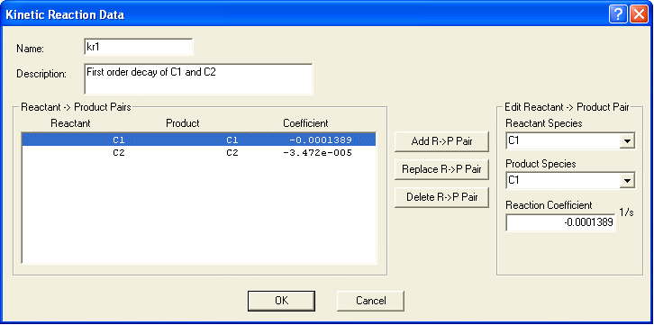
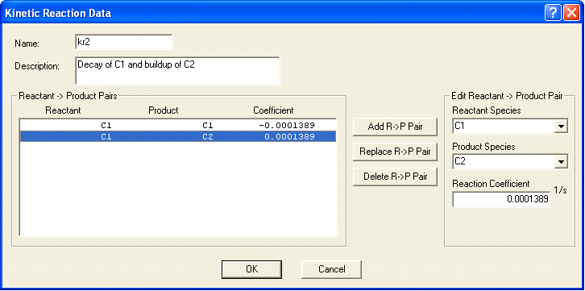
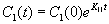

动力学反应元件由源/产物物种对组成。您可以为每个元素定义任意数量的对。当您执行模拟时，只会考虑您选择作为污染物的那些物种。这些是描述动力学反应的属性。
姓名： 输入要用于识别反应基质的唯一名称。您将使用此名称将此元素与项目内的房间相关联。
说明： 用它来提供动力学反应的更详细的描述。
反应物 → 产品对： 这是当前为当前动力学反应元素定义的反应物/产物对及其相关反应系数的列表。
编辑反应物 → 产品对： 使用此部分编辑突出显示的反应物 ® 产品配对或创建新产品。相应地使用添加、替换和删除按钮。
反应物种类： 这是当前项目或库文件中所有物种的列表，具体取决于访问此对话框的方式。选择一个物种作为 R 中的反应物 ® P 对。
产品种类： 这是当前项目或库文件中所有物种的列表，具体取决于访问此对话框的方式。选择一个物种作为 R 中的产品 ® P 对。
反应系数： 使用此编辑字段设置当前突出显示的 R 的反应系数 ® P 对。系数的单位是 s -1.
以下是在 CONTAMW 中实现的动力学反应的示例。
动力学反应实施例1
要模拟物质的一阶衰变，您可以设置反应物的系数 → 产品对与反应速率的负值（以 1/s 为单位）。

该图显示了两种物质反应的动力学反应系数，这些反应将根据以下方程产生每种物质的指数衰减：
哪里，
Cj(t) = 产品污染物浓度 j 在某个时间 t
Ci(0) = 反应物污染物的初始浓度 i 在时间 0
Kji = 产物之间的反应速率系数 j 和反应物 i （时间常数）
在上例中，反应速率系数如下：
K11
= -0.0001388/秒
K22
= -0.00003472/秒
如果反应是去除物质的唯一方法，即没有气流引起的稀释，则物质 C1 将以以下速率衰减：
0.0001388 * 3600 = 0.5/小时，
C2 将以以下速率衰减
0.00003472 * 3600 = 0.125/小时。
动力学反应实施例2
此示例说明了物种 C1（反应物和产物）的一阶衰减以及基于 C1（反应物）的另一物种 C2（产物）的一阶累积。

上图显示了“kr1”动力学反应元件的参数。该元素提供两个反应，根据方程式产生污染物 C1 的指数衰减

,以及污染物 C2 的积累

在上例中，反应速率系数如下：
K11
= -0.0001389/秒
K21
= 0.0001389/秒
请注意，衰减和累积都取决于 C1 的种类。
动力学反应实施例3
您还可以使用动力学反应来模拟连续的一级反应系列。 （氡气的放射性衰变链就是此类反应的一个例子。）
每一步涉及单一反应物的两步连续反应系列表示为
C1 ® C2
C2 ®
产品
您可以通过输入基于放射性反应物半衰期的系数来对该反应链进行建模。转换半衰期 t1/2 为一级反应系数， K21 ，使用以下等式：

在 CONTAM 中，您需要两种物质 C1 和 C2（如果对污染物 C2 感兴趣），并且三个反应物/产物对具有以下反应系数特征：
K11 将具有负非零值（C1 衰减）
K21 将具有非零正值（从 C1 累积 C2）
K22 将具有负非零值（C2 衰减）